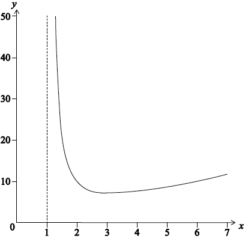

HL Paper 3
The function f is defined on the domain \(\left] { - \frac{\pi }{2},\frac{\pi }{2}} \right[{\text{ by }}f(x) = \ln (1 + \sin x)\) .
Show that \(f''(x) = - \frac{1}{{(1 + \sin x)}}\) .
(i) Find the Maclaurin series for \(f(x)\) up to and including the term in \({x^4}\) .
(ii) Explain briefly why your result shows that f is neither an even function nor an odd function.
Determine the value of \(\mathop {\lim }\limits_{x \to 0} \frac{{\ln (1 + \sin x) - x}}{{{x^2}}}\).
Markscheme
\(f'(x) = \frac{{\cos x}}{{1 + \sin x}}\) A1
\(f''(x) = \frac{{ - \sin x(1 + \sin x) - \cos x\cos x}}{{{{(1 + \sin x)}^2}}}\) M1A1
\( = \frac{{ - \sin x - ({{\sin }^2}x + {{\cos }^2}x)}}{{{{(1 + \sin x)}^2}}}\) A1
\( = - \frac{1}{{1 + \sin x}}\) AG
[4 marks]
(i) \(f'''(x) = \frac{{\cos x}}{{{{(1 + \sin x)}^2}}}\) A1
\({f^{(4)}}(x) = \frac{{ - \sin x{{(1 + \sin x)}^2} - 2(1 + \sin x){{\cos }^2}x}}{{{{(1 + \sin x)}^4}}}\) M1A1
\(f(0) = 0,{\text{ }}f'(0) = 1,{\text{ }}f''(0) = - 1\) M1
\(f'''(0) = 1,{\text{ }}{f^{(4)}}(0) = - 2\) A1
\(f(x) = x - \frac{{{x^2}}}{2} + \frac{{{x^3}}}{6} - \frac{{{x^4}}}{{12}} + \ldots \) A1
(ii) the series contains even and odd powers of x R1
[7 marks]
\(\mathop {\lim }\limits_{x \to 0} \frac{{\ln (1 + \sin x) - x}}{{{x^2}}} = \mathop {\lim }\limits_{x \to 0} \frac{{x - \frac{{{x^2}}}{2} + \frac{{{x^3}}}{6} + \ldots - x}}{{{x^2}}}\) M1
\( = \mathop {\lim }\limits_{x \to 0} \frac{{\frac{{ - 1}}{2} + \frac{x}{6} + \ldots }}{1}\) (A1)
\( = - \frac{1}{2}\) A1
Note: Use of l’Hopital’s Rule is also acceptable.
[3 marks]
Examiners report
The integral \({I_n}\) is defined by \({I_n} = \int_{n\pi }^{(n + 1)\pi } {{{\text{e}}^{ - x}}|\sin x|{\text{d}}x,{\text{ for }}n \in \mathbb{N}} \) .
Show that \({I_0} = \frac{1}{2}(1 + {{\text{e}}^{ - \pi }})\) .
By letting \(y = x - n\pi \) , show that \({I_n} = {{\text{e}}^{ - n\pi }}{I_0}\) .
Hence determine the exact value of \(\int_0^\infty {{{\text{e}}^{ - x}}|\sin x|{\text{d}}x} \) .
Markscheme
\({I_0} = \int_0^\pi {{{\text{e}}^{ - x}}\sin x{\text{d}}x} \) M1
Note: Award M1 for \({I_0} = \int_0^\pi {{{\text{e}}^{ - x}}|\sin x|{\text{d}}x} \)
Attempt at integration by parts, even if inappropriate modulus signs are present. M1
\( = - \left[ {{{\text{e}}^{ - x}}\cos x} \right]_0^\pi - \int_0^\pi {{{\text{e}}^{ - x}}\cos x{\text{d}}x} \) or \( = - \left[ {{{\text{e}}^{ - x}}\sin x} \right]_0^\pi - \int_0^\pi {{{\text{e}}^{ - x}}\cos x{\text{d}}x} \) A1
\( = - \left[ {{{\text{e}}^{ - x}}\cos x} \right]_0^\pi - \left[ {{{\text{e}}^{ - x}}\sin x} \right]_0^\pi - \int_0^\pi {{{\text{e}}^{ - x}}\sin x{\text{d}}x} \) or \( = - \left[ {{{\text{e}}^{ - x}}\sin x + {{\text{e}}^{ - x}}\cos x} \right]_0^\pi - \int_0^\pi {{{\text{e}}^{ - x}}\sin x{\text{d}}x} \) A1
\( = - \left[ {{{\text{e}}^{ - x}}\cos x} \right]_0^\pi - \left[ {{{\text{e}}^{ - x}}\sin x} \right]_0^\pi - {I_0}\) or \( - \left[ {{{\text{e}}^{ - x}}\sin x + {{\text{e}}^{ - x}}\cos x} \right]_0^\pi - {I_0}\) M1
Note: Do not penalise absence of limits at this stage
\({I_0} = {{\text{e}}^{ - \pi }} + 1 - {I_0}\) A1
\({I_0} = \frac{1}{2}(1 + {{\text{e}}^{ - \pi }})\) AG
Note: If modulus signs are used around cos x , award no accuracy marks but do not penalise modulus signs around sin x .
[6 marks]
\({I_n} = \int_{n\pi }^{(n + 1)\pi } {{{\text{e}}^{ - x}}|\sin x|{\text{d}}x} \)
Attempt to use the substitution \(y = x - n\pi \) M1
(putting \(y = x - n\pi \) , \({\text{d}}y = {\text{d}}x\) and \(\left[ {n\pi ,{\text{ }}(n + 1)\pi } \right] \to [0,{\text{ }}\pi ]\))
so \({I_n} = \int_0^\pi {{{\text{e}}^{ - (y + n\pi )}}|\sin (y + n\pi )|{\text{d}}y} \) A1
\( = {{\text{e}}^{ - n\pi }}\int_0^\pi {{{\text{e}}^{ - y}}|\sin (y + n\pi )|{\text{d}}y} \) A1
\( = {{\text{e}}^{ - n\pi }}\int_0^\pi {{{\text{e}}^{ - y}}\sin y{\text{d}}y} \) A1
\( = {{\text{e}}^{ - n\pi }}{I_0}\) AG
[4 marks]
\(\int_0^\infty {{{\text{e}}^{ - x}}|\sin x|{\text{d}}x} = \sum\limits_{n = 0}^\infty {{I_n}} \) M1
\( = \sum\limits_{n = 0}^\infty {{{\text{e}}^{ - n\pi }}{I_0}} \) (A1)
the \(\sum \) term is an infinite geometric series with common ratio \({{\text{e}}^{ - \pi }}\) (M1)
therefore
\(\int_0^\infty {{{\text{e}}^{ - x}}|\sin x|{\text{d}}x} = \frac{{{I_0}}}{{1 - {{\text{e}}^{ - \pi }}}}\) (A1)
\( = \frac{{1 + {{\text{e}}^{ - \pi }}}}{{2(1 - {{\text{e}}^{ - \pi }})}}{\text{ }}\left( { = \frac{{{{\text{e}}^\pi } + 1}}{{2({{\text{e}}^\pi } - 1)}}} \right)\) A1
[5 marks]
Examiners report
Part (a) is essentially core work requiring repeated integration by parts and many candidates realised that. However, some candidates left the modulus signs in \({I_0}\) which invalidated their work. In parts (b) and (c) it was clear that very few candidates had a complete understanding of the significance of the modulus sign and what conditions were necessary for it to be dropped. Overall, attempts at (b) and (c) were disappointing with few correct solutions seen.
Part (a) is essentially core work requiring repeated integration by parts and many candidates realised that. However, some candidates left the modulus signs in \({I_0}\) which invalidated their work. In parts (b) and (c) it was clear that very few candidates had a complete understanding of the significance of the modulus sign and what conditions were necessary for it to be dropped. Overall, attempts at (b) and (c) were disappointing with few correct solutions seen.
Part (a) is essentially core work requiring repeated integration by parts and many candidates realised that. However, some candidates left the modulus signs in \({I_0}\) which invalidated their work. In parts (b) and (c) it was clear that very few candidates had a complete understanding of the significance of the modulus sign and what conditions were necessary for it to be dropped. Overall, attempts at (b) and (c) were disappointing with few correct solutions seen.
Given that \(y = \ln \left( {\frac{{1 + {{\text{e}}^{ - x}}}}{2}} \right)\), show that \(\frac{{{\text{d}}y}}{{{\text{d}}x}} = \frac{{{{\text{e}}^{ - y}}}}{2} - 1\).
Hence, by repeated differentiation of the above differential equation, find the Maclaurin series for y as far as the term in \({x^3}\), showing that two of the terms are zero.
Markscheme
METHOD 1
\(y = \ln \left( {\frac{{1 + {{\text{e}}^{ - x}}}}{2}} \right)\)
\(\frac{{{\text{d}}y}}{{{\text{d}}x}} = \frac{{ - 2{{\text{e}}^{ - x}}}}{{2(1 + {{\text{e}}^{ - x}})}} = \frac{{ - {{\text{e}}^{ - x}}}}{{1 + {{\text{e}}^{ - x}}}}\) M1A1
now \(\frac{{1 + {{\text{e}}^{ - x}}}}{2} = {{\text{e}}^y}\) M1
\( \Rightarrow 1 + {{\text{e}}^{ - x}} = 2{{\text{e}}^y}\)
\( \Rightarrow {{\text{e}}^{ - x}} = 2{{\text{e}}^y} - 1\) (A1)
\( \Rightarrow \frac{{{\text{d}}y}}{{{\text{d}}x}} = \frac{{ - 2{{\text{e}}^y} + 1}}{{2{{\text{e}}^y}}}\) (A1)
Note: Only one of the two above A1 marks may be implied.
\( \Rightarrow \frac{{{\text{d}}y}}{{{\text{d}}x}} = \frac{{{{\text{e}}^{ - y}}}}{2} = - 1\) AG
Note: Candidates may find \(\frac{{{\text{d}}y}}{{{\text{d}}x}}\) as a function of x and then work backwards from the given answer. Award full marks if done correctly.
METHOD 2
\(y = \ln \left( {\frac{{1 + {{\text{e}}^{ - x}}}}{2}} \right)\)
\( \Rightarrow {{\text{e}}^y} = \frac{{1 + {{\text{e}}^{ - x}}}}{2}\) M1
\( \Rightarrow {{\text{e}}^{ - x}} = 2{{\text{e}}^y} - 1\)
\( \Rightarrow x = - \ln (2{{\text{e}}^y} - 1)\) A1
\( \Rightarrow \frac{{{\text{d}}x}}{{{\text{d}}y}} = - \frac{1}{{2{{\text{e}}^y} - 1}} \times 2{{\text{e}}^y}\) M1A1
\( \Rightarrow \frac{{{\text{d}}y}}{{{\text{d}}x}} = \frac{{2{{\text{e}}^y} - 1}}{{ - 2{{\text{e}}^y}}}\) A1
\( \Rightarrow \frac{{{\text{d}}y}}{{{\text{d}}x}} = \frac{{{{\text{e}}^{ - y}}}}{2} - 1\) AG
[5 marks]
METHOD 1
when \(x = 0,{\text{ }}y = \ln 1 = 0\) A1
when \(x = 0,{\text{ }}\frac{{{\text{d}}y}}{{{\text{d}}x}} = \frac{1}{2} - 1 = - \frac{1}{2}\) A1
\(\frac{{{{\text{d}}^2}y}}{{{\text{d}}{x^2}}} = - \frac{{{{\text{e}}^{ - y}}}}{2}\frac{{{\text{d}}y}}{{{\text{d}}x}}\) M1A1
when \(x = 0,{\text{ }}\frac{{{{\text{d}}^2}y}}{{{\text{d}}{x^2}}} = \frac{1}{2} \times \frac{1}{2} = \frac{1}{4}\) A1
\(\frac{{{{\text{d}}^3}y}}{{{\text{d}}{x^3}}} = \frac{{{{\text{e}}^{ - y}}}}{2}{\left( {\frac{{{\text{d}}y}}{{{\text{d}}x}}} \right)^2} - \frac{{{{\text{e}}^{ - y}}}}{2}\frac{{{{\text{d}}^2}y}}{{{\text{d}}{x^2}}}\) M1A1A1
when \(x = 0,{\text{ }}\frac{{{{\text{d}}^3}y}}{{{\text{d}}{x^3}}} = \frac{1}{2} \times \frac{1}{4} - \frac{1}{2} \times \frac{1}{4} = 0\) A1
\(y = f(0) + f'(0)x + \frac{{f''(0)}}{{2!}}{x^2} + \frac{{f'''(0)}}{{3!}}{x^3}\)
\( \Rightarrow y = 0 - \frac{1}{2}x + \frac{1}{8}{x^2} + 0{x^3} + \ldots \) (M1)A1
two of the above terms are zero AG
METHOD 2
when \(x = 0,{\text{ }}y = \ln 1 = 0\) A1
when \(x = 0,{\text{ }}\frac{{{\text{d}}y}}{{{\text{d}}x}} = \frac{1}{2} - 1 = - \frac{1}{2}\) A1
\(\frac{{{{\text{d}}^2}y}}{{{\text{d}}{x^2}}} = \frac{{ - {{\text{e}}^{ - y}}}}{2}\frac{{{\text{d}}y}}{{{\text{d}}x}} = \frac{{ - {{\text{e}}^{ - y}}}}{2}\left( {\frac{{{{\text{e}}^{ - y}}}}{2} - 1} \right) = \frac{{ - {{\text{e}}^{2y}}}}{4} + \frac{{{{\text{e}}^{ - y}}}}{2}\) M1A1
when \(x = 0,{\text{ }}\frac{{{{\text{d}}^2}y}}{{{\text{d}}{x^2}}} = - \frac{1}{4} + \frac{1}{2} = \frac{1}{4}\) A1
\(\frac{{{{\text{d}}^3}y}}{{{\text{d}}{x^3}}} = \left( {\frac{{{{\text{e}}^{ - 2y}}}}{2} - \frac{{{{\text{e}}^{ - y}}}}{2}} \right)\frac{{{\text{d}}y}}{{{\text{d}}x}}\) M1A1A1
when \(x = 0,{\text{ }}\frac{{{{\text{d}}^3}y}}{{{\text{d}}{x^3}}} = - \frac{1}{2} \times \left( {\frac{1}{2} - \frac{1}{2}} \right) = 0\) A1
\(y = f(0) + f'(0)x + \frac{{f''(0)}}{{2!}}{x^2} + \frac{{f'''(0)}}{{3!}}{x^3}\)
\( \Rightarrow y = 0 - \frac{1}{2}x + \frac{1}{8}{x^2} + 0{x^3} + \ldots \) (M1)A1
two of the above terms are zero AG
[11 marks]
Examiners report
Many candidates were successful in (a) with a variety of methods seen. In (b) the use of the chain rule was often omitted when differentiating \({{{\text{e}}^{ - y}}}\) with respect to x. A number of candidates tried to repeatedly differentiate the original expression, which was not what was asked for, although partial credit was given for this. In this case, they often found problems in simplifying the algebra.
Many candidates were successful in (a) with a variety of methods seen. In (b) the use of the chain rule was often omitted when differentiating \({{{\text{e}}^{ - y}}}\) with respect to x. A number of candidates tried to repeatedly differentiate the original expression, which was not what was asked for, although partial credit was given for this. In this case, they often found problems in simplifying the algebra.
The function \(f\) is defined by \(f(x) = {{\text{e}}^{ - x}}\cos x + x - 1\).
By finding a suitable number of derivatives of \(f\), determine the first non-zero term in its Maclaurin series.
Markscheme
\(f(0) = 0\) A1
\(f'(x) = - {{\text{e}}^{ - x}}\cos x - {{\text{e}}^{ - x}}\sin x + 1\) M1A1
\(f'(0) = 0\) (M1)
\(f''(x) = 2{{\text{e}}^{ - x}}\sin x\) A1
\(f''(0) = 0\)
\({f^{(3)}}(x) = - 2{{\text{e}}^{ - x}}\sin x + 2{{\text{e}}^{ - x}}\cos x\) A1
\({f^{(3)}}(0) = 2\)
the first non-zero term is \(\frac{{2{x^3}}}{{3!}}\;\;\;\left( { = \frac{{{x^3}}}{3}} \right)\) A1
Note: Award no marks for using known series.
[7 marks]
Examiners report
Most students had a good understanding of the techniques involved with this question. A surprising number forgot to show \(f(0) = 0\). Some candidates did not simplify the second derivative which created extra work and increased the chance of errors being made.
Let \(f(x) = {{\text{e}}^x}\sin x\).
Show that \(f''(x) = 2\left( {f'(x) - f(x)} \right)\).
By further differentiation of the result in part (a) , find the Maclaurin expansion of \(f(x)\), as far as the term in \({x^5}\).
Markscheme
\(f'(x) = {{\text{e}}^x}\sin x + {{\text{e}}^x}\cos x\) M1A1
\(f''(x) = {{\text{e}}^x}\sin x + {{\text{e}}^x}\cos x - {{\text{e}}^x}\sin x + {{\text{e}}^x}\cos x = 2{{\text{e}}^x}\cos x\) A1
\( = 2\left( {{{\text{e}}^x}\sin x + {{\text{e}}^x}\cos x - {{\text{e}}^x}\sin x} \right)\) M1
\( = 2\left( {f'(x) - f(x)} \right)\) AG
[4 marks]
\(f(0) = 0,{\text{ }}f'(0) = 1,{\text{ }}f''(0) = 2(1 - 0) = 2\) (M1)A1
Note: Award M1 for attempt to find \(f(0)\), \(f'(0)\) and \(f''(0)\).
\(f'''(x) = 2\left( {f''(x) - f'(x)} \right)\) (M1)
\(f'''(0) = 2(2 - 1) = 2,{\text{ }}{f^{IV}}(0) = 2(2 - 2) = 0,{\text{ }}{f^V}(0) = 2(0 - 2) = - 4\) A1
so \(f(x) = x + \frac{2}{{2!}}{x^2} + \frac{2}{{3!}}{x^3} - \frac{4}{{5!}} + \ldots \) (M1)A1
\( = x + {x^2} + \frac{1}{3}{x^3} - \frac{1}{{30}}{x^5} + \ldots \)
[6 marks]
Total [10 marks]
Examiners report
Let \(f(x) = 2x + \left| x \right|\) , \(x \in \mathbb{R}\) .
Prove that f is continuous but not differentiable at the point (0, 0) .
Determine the value of \(\int_{ - a}^a {f(x){\text{d}}x} \) where \(a > 0\) .
Markscheme
we note that \(f(0) = 0,{\text{ }}f(x) = 3x\) for \(x > 0\) and \(f(x) = x{\text{ for }}x < 0\)
\(\mathop {\lim }\limits_{x \to {0^ - }} f(x) = \mathop {\lim }\limits_{x \to {0^ - }} x = 0\) M1A1
\(\mathop {\lim }\limits_{x \to {0^ - }} f(x) = \mathop {\lim }\limits_{x \to {0^ - }} 3x = 0\) A1
since \(f(0) = 0\) , the function is continuous when x = 0 AG
\(\mathop {\lim }\limits_{x \to {0^ - }} \frac{{f(0 + h) - f(0)}}{h} = \mathop {\lim }\limits_{x \to {0^ - }} \frac{h}{h} = 1\) M1A1
\(\mathop {\lim }\limits_{x \to {0^ + }} \frac{{f(0 + h) - f(0)}}{h} = \mathop {\lim }\limits_{x \to {0^ + }} \frac{{3h}}{h} = 3\) A1
these limits are unequal R1
so f is not differentiable when x = 0 AG
[7 marks]
\(\int_{ - a}^a {f(x){\text{d}}x = \int_{ - a}^0 {x{\text{d}}x + \int_0^a {3x{\text{d}}x} } } \) M1
\( = \left[ {\frac{{{x^2}}}{2}} \right]_{ - a}^0 + \left[ {\frac{{3{x^2}}}{2}} \right]_0^a\) A1
\( = {a^2}\) A1
[3 marks]
Examiners report
The curves \(y = f(x)\) and \(y = g(x)\) both pass through the point \((1,{\text{ }}0)\) and are defined by the differential equations \(\frac{{{\text{d}}y}}{{{\text{d}}x}} = x - {y^2}\) and \(\frac{{{\text{d}}y}}{{{\text{d}}x}} = y - {x^2}\) respectively.
Show that the tangent to the curve \(y = f(x)\) at the point \((1,{\text{ }}0)\) is normal to the curve \(y = g(x)\) at the point \((1,{\text{ }}0)\).
Find \(g(x)\).
Use Euler’s method with steps of \(0.2\) to estimate \(f(2)\) to \(5\) decimal places.
Explain why \(y = f(x)\) cannot cross the isocline \(x - {y^2} = 0\), for \(x > 1\).
(i) Sketch the isoclines \(x - {y^2} = - 2,{\text{ }}0,{\text{ }}1\).
(ii) On the same set of axes, sketch the graph of \(f\).
Markscheme
gradient of \(f\) at \((1,{\text{ }}0)\) is \(1 - {0^2} = 1\) and the gradient of \(g\) at \((1,{\text{ }}0)\) is \(0 - {1^2} = - 1\) A1
so gradient of normal is \(1\) A1
= Gradient of the tangent of \(f\) at \((1,{\text{ }}0)\) AG
[2 marks]
\(\frac{{{\text{d}}y}}{{{\text{d}}x}} - y = - {x^2}\)
integrating factor is \({{\text{e}}^{\int { - 1{\text{d}}x} }} = {{\text{e}}^{ - x}}\) M1
\(y{{\text{e}}^{ - x}} = \int { - {x^2}{{\text{e}}^{ - x}}{\text{d}}x} \) A1
\( = {x^2}{{\text{e}}^{ - x}} - \int {2x{{\text{e}}^{ - x}}{\text{d}}x} \) M1
\( = {x^2}{{\text{e}}^{ - x}} + 2x{{\text{e}}^{ - x}} - \int {2{{\text{e}}^{ - x}}{\text{d}}x} \)
\( = {x^2}{{\text{e}}^{ - x}} + 2x{{\text{e}}^{ - x}} + 2{{\text{e}}^{ - x}} + c\) A1
Note: Condone missing \( + c\) at this stage.
\( \Rightarrow g(x) = {x^2} + 2x + 2 + c{{\text{e}}^x}\)
\(g(1) = 0 \Rightarrow c = - \frac{5}{{\text{e}}}\) M1
\( \Rightarrow g(x) = {x^2} + 2x + 2 - 5{{\text{e}}^{x - 1}}\) A1
[6 marks]
use of \({y_{n + 1}} = {y_n} + hf'({x_n},{\text{ }}{y_n})\) (M1)
\({x_0} = 1,{\text{ }}{y_0} = 0\)
\({x_1} = 1.2,{\text{ }}{y_1} = 0.2\) A1
\({x_2} = 1.4,{\text{ }}{y_2} = 0.432\) (M1)(A1)
\({x_3} = 1.6,{\text{ }}{y_3} = 0.67467 \ldots \)
\({x_4} = 1.8,{\text{ }}{y_4} = 0.90363 \ldots \)
\({x_5} = 2,{\text{ }}{y_5} = 1.1003255 \ldots \)
answer \( = 1.10033\) A1 N3
Note: Award A0 or N1 if \(1.10\) given as answer.
[5 marks]
at the point \((1,{\text{ }}0)\), the gradient of \(f\) is positive so the graph of \(f\) passes into the first quadrant for \(x > 1\)
in the first quadrant below the curve \(x - {y^2} = 0\) the gradient of \(f\) is positive R1
the curve \(x - {y^2} = 0\) has positive gradient in the first quadrant R1
if \(f\) were to reach \(x - {y^2} = 0\) it would have gradient of zero, and therefore would not cross R1
[3 marks]
(i) and (ii)
 A4
A4
Note: Award A1 for 3 correct isoclines.
Award A1 for \(f\) not reaching \(x - {y^2} = 0\).
Award A1 for turning point of \(f\) on \(x - {y^2} = 0\).
Award A1 for negative gradient to the left of the turning point.
Note: Award A1 for correct shape and position if curve drawn without any isoclines.
[4 marks]
Total [20 marks]
Examiners report
Consider the functions \(f(x) = {(\ln x)^2},{\text{ }}x > 1\) and \(g(x) = \ln \left( {f(x)} \right),{\text{ }}x > 1\).
(i) Find \(f'(x)\).
(ii) Find \(g'(x)\).
(iii) Hence, show that \(g(x)\) is increasing on \(\left] {1,{\text{ }}\infty } \right[\).
Consider the differential equation
\[(\ln x)\frac{{{\text{d}}y}}{{{\text{d}}x}} + \frac{2}{x}y = \frac{{2x - 1}}{{(\ln x)}},{\text{ }}x > 1.\]
(i) Find the general solution of the differential equation in the form \(y = h(x)\).
(ii) Show that the particular solution passing through the point with coordinates \(\left( {{\text{e, }}{{\text{e}}^2}} \right)\) is given by \(y = \frac{{{x^2} - x + {\text{e}}}}{{{{(\ln x)}^2}}}\).
(iii) Sketch the graph of your solution for \(x > 1\), clearly indicating any asymptotes and any maximum or minimum points.
Markscheme
(i) attempt at chain rule (M1)
\(f'(x) = \frac{{2\ln x}}{x}\) A1
(ii) attempt at chain rule (M1)
\(g'(x) = \frac{2}{{x\ln x}}\) A1
(iii) \(g'(x)\) is positive on \(\left] {1,{\text{ }}\infty } \right[\) A1
so \(g(x)\) is increasing on \(\left] {1,{\text{ }}\infty } \right[\) AG
[5 marks]
(i) rearrange in standard form:
\(\frac{{{\text{d}}y}}{{{\text{d}}x}} + \frac{2}{{x\ln x}}y = \frac{{2x - 1}}{{{{(\ln x)}^2}}},{\text{ }}x > 1\) (A1)
integrating factor:
\({{\text{e}}^{\int {\frac{2}{{x\ln x}}{\text{d}}x} }}\) (M1)
\( = {{\text{e}}^{\ln \left( {{{(\ln x)}^2}} \right)}}\)
\( = {(\ln x)^2}\) (A1)
multiply by integrating factor (M1)
\({(\ln x)^2}\frac{{{\text{d}}y}}{{{\text{d}}x}} + \frac{{2\ln x}}{x}y = 2x - 1\)
\(\frac{{\text{d}}}{{{\text{d}}x}}\left( {y{{(\ln x)}^2}} \right) = 2x - 1{\text{ }}\left( {{\text{or }}y{{(\ln x)}^2} = \int {2x - 1{\text{d}}x} } \right)\) M1
attempt to integrate: M1
\({(\ln x)^2}y = {x^2} - x + c\)
\(y = \frac{{{x^2} - x + c}}{{{{(\ln x)}^2}}}\) A1
(ii) attempt to use the point \(\left( {{\text{e, }}{{\text{e}}^2}} \right)\) to determine c: M1
eg, \({(\ln {\text{e}})^2}{{\text{e}}^2} = {{\text{e}}^2} - {\text{e}} + {\text{c}}\) or \({{\text{e}}^2} = \frac{{{{\text{e}}^2} - {\text{e}} + {\text{c}}}}{{{{(\ln {\text{e}})}^2}}}\) or \({{\text{e}}^2} = {{\text{e}}^2} - {\text{e}} + {\text{c}}\)
\({\text{c}} = {\text{e}}\) A1
\(y = \frac{{{x^2} - x + {\text{e}}}}{{{{(\ln x)}^2}}}\) AG
(iii)

graph with correct shape A1
minimum at \(x = 3.1\) (accept answers to a minimum of 2 s.f) A1
asymptote shown at \(x = 1\) A1
Note: y-coordinate of minimum not required for A1;
Equation of asymptote not required for A1 if VA appears on the sketch.
Award A0 for asymptotes if more than one asymptote are shown
[12 marks]